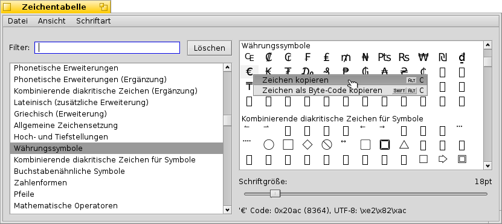

Deutsch
Deutsch Català
Català English
English Español
Español Français
Français Italiano
Italiano Magyar
Magyar Polski
Polski Português
Português Português (Brazil)
Português (Brazil) Română
Română Slovenčina
Slovenčina Suomi
Suomi Svenska
Svenska 中文 ［中文］
中文 ［中文］ Русский
Русский Українська
Українська 日本語
日本語 Zeichentabelle
Zeichentabelle
| Deskbar: | ||
| Ort: | /boot/system/apps/CharacterMap | |
| Einstellungen: | ~/config/settings/CharacterMap settings |
Die Zeichentabelle zeigt eine Übersicht aller Schriftzeichen und deren UTF-8 Code, die eine Schriftart enthält.
Links werden alle Standard-Blöcke innerhalb einer Schriftart angezeigt, die mittels Filter eingegrenzt werden können. Es ist auch möglich, zusätzlich enthaltene Schriftzeichen mit aus dem Menü einzublenden. Rechter Hand werden die einzelnen Schriftzeichen aus dem ausgewählten Block der im Menüpunkt ausgewählten Schriftart angezeigt. Mit dem Schieberegler darunter kann die Schriftgröße eingestellt werden. Ganz unten wird das Schriftzeichen unter dem Mauszeiger als Code in Hex, Dezimal und UTF-8 angezeigt.
Aus der Schriftzeichen-Tabelle lässt sich ein einzelnes Zeichen direkt in eine andere Anwendung ziehen. Es ist auch möglich, über einen Rechtsklick und (ALT C) das Zeichen zu kopieren, oder mittels (SHIFT ALT C) das Zeichen als Code zu übernehmen. So erhält man beispielsweise entweder € oder \\xe2\\x82\\xac.